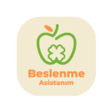

<!-- 'mat-button','mat-raised-button', 'mat-flat-button','mat-stroked-button','mat-icon-button','mat-fab','mat-mini-fab' -->

 <mat-drawer-container class="example-container">
  <mat-drawer #drawer mode="side" opened class="  justify-content-center mb-0">

    <div class="mt-3 d-flex flex-column align-items-center">
      <mat-icon style="font-size: 30px; opacity: 0.7;" class="mb-2">person</mat-icon>

      <h2 class="text-center" style="opacity: 0.7;">{{getKulAd()}}</h2>
    </div>
    <mat-divider class="bg-white"></mat-divider>
    <ul class="nav flex-column  m-3">

      <li class="nav-item   bg-white mb-2" style="opacity: 0.6;"  [routerLinkActive]="['active']">
        <a class="nav-link text-secondary"  [routerLink]="['/home']" href="#">Anasayfa</a>
      </li>
      <li class="nav-item   bg-white mb-2" style="opacity: 0.6;"  [routerLinkActive]="['active']">
        <a class="nav-link text-secondary"  [routerLink]="['/kullanicilar']" href="#">Kullanıcılar</a>
      </li>
      <li class="nav-item   bg-white mb-2" style="opacity: 0.6;">
        <a class="nav-link text-secondary"  href="#"  [routerLink]="['/gidas']">Gidalar</a>
      </li>
      <li class="nav-item   bg-white mb-2" style="opacity: 0.6;">
        <a class="nav-link text-secondary"  href="#"  [routerLink]="['/bildirimler']">Bildirimler</a>
      </li>

      <li class="nav-item   bg-white mb-2" style="opacity: 0.6;" [routerLinkActive]="['active']">
        <a class="nav-link text-secondary"  href="#" [routerLink]="['/profile']">Profil</a>
      </li>
      <li class="nav-item   bg-white mb-2" style="opacity: 0.6;"  [routerLinkActive]="['active']">
        <a class="nav-link text-secondary"  href="#"  [routerLink]="['/yorum']" >Yorumlar</a>
      </li>
    </ul>

      


  </mat-drawer>
  <mat-drawer-content    style=" overflow-x: hidden;">
    <mat-toolbar #toolbar class="bg-white text-secondary mat-elevation-z4">

      <div class="d-flex justify-content-between w-100">
          <div id="bolum-bir" class="d-flex ">
            <button mat-icon-button (click)="drawer.toggle()" class="example-icon mr-3" aria-label="Example icon-button with menu icon">
              <mat-icon class="c_icon">menu</mat-icon>
            </button>
            <!-- 'mat-button','mat-raised-button', 'mat-flat-button','mat-stroked-button','mat-icon-button','mat-fab','mat-mini-fab' -->

            <button mat-flat-button class="text-secondary display-3  c_font">Beslenme Asistanım Yönetim Paneli</button>
           <!--Bildirimler-->
            <button  mat-icon-button class="example-icon favorite-icon ml-3"  [matMenuTriggerFor]="menu">
               <mat-icon matBadge="11" matBadgePosition="before" matBadgeColor="warn" matBadgeSize="small" matBadgeOverlap="true" class="c_icon">public</mat-icon>
            </button>

            <mat-menu #menu="matMenu">
              <button mat-menu-item [routerLink]="['/bildirimler']" routerLinkActive="router-link-active" >Geri Bildirim</button>
              <button mat-menu-item [routerLink]="['/yorum']" routerLinkActive="router-link-active" >Yorum</button>
            </mat-menu>
               <button mat-icon-button class="example-icon" aria-label="Example icon-button with share icon">
                <mat-icon class="c_icon">search</mat-icon>
              </button>


          </div>
          <!--Sağ taraf menu-->
          <div>
              <!-- 'mat-button','mat-raised-button', 'mat-flat-button','mat-stroked-button','mat-icon-button','mat-fab','mat-mini-fab' -->
              <button mat-button [routerLink]="['/profile']" routerLinkActive="router-link-active"  >Hesap</button>
              <button mat-button >Çıkış Yap</button>

          </div>
      </div>


    </mat-toolbar>

<router-outlet>


</router-outlet>

  </mat-drawer-content>
</mat-drawer-container>

